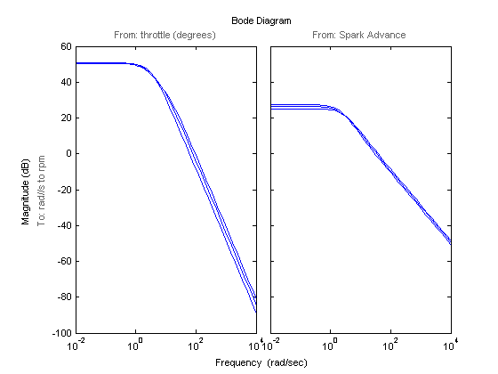

エンジン スピード モデルの線形化
目次
このデモでは、エンジン スピード モデルの線形化を紹介します。
モデルを開くには、次のコマンドを使用します。
scdspeed

操作点の生成
この例では、出力エンジン スピードの線形モデルと入力間の線形モデル、点火進角、およびスロットル角を生成します。FINDOP コマンドは、2000 rpm、3000 rpm、および 4000 rpm の定常状態条件で操作点を計算します。
次のコマンドを使用して、操作点の仕様オブジェクトを作成します。
opspec = operspec('scdspeed')
Operating Specification for the Model scdspeed.
(Time-Varying Components Evaluated at time t=0)
States:
----------
(1.) scdspeed/Throttle & Manifold/Intake Manifold/p0 = 0.543 bar
spec: dx = 0, initial guess: 0.543
(2.) scdspeed/Vehicle Dynamics/w = T//J w0 = 209 rad//s
spec: dx = 0, initial guess: 209
Inputs:
----------
(1.) scdspeed/Throttle perturbation
initial guess: 0
Outputs: None
----------
次に、目的の操作条件を指定します。車両のダイナミクスの最初の出力端子を 2000 rpm.、3000 rpm、および 4000 rpm に固定します。固定するには、ADDOUTPUTSPEC コマンドを使用します。
opspec = addoutputspec(opspec,'scdspeed/rad//s to rpm',1);
最初の操作仕様を設定します。
opspec.Output.Known = 1; opspec.Outputs.y = 2000;
この仕様を満たす操作点を検索します。
op(1) = findop('scdspeed',opspec);
Operating Point Search Report:
---------------------------------
Operating Report for the Model scdspeed.
(Time-Varying Components Evaluated at time t=0)
Operating point specifications were successfully met.
States:
----------
(1.) scdspeed/Throttle & Manifold/Intake Manifold/p0 = 0.543 bar
x: 0.544 dx: 2.66e-013 (0)
(2.) scdspeed/Vehicle Dynamics/w = T//J w0 = 209 rad//s
x: 209 dx: -8.48e-012 (0)
Inputs:
----------
(1.) scdspeed/Throttle perturbation
u: 0.00382 [-Inf Inf]
Outputs:
----------
(1.) scdspeed/rad//s to rpm
y: 2e+003 (2e+003)
次に、3000 rpm と 4000 rpm で残りの操作点を検索します。
opspec.Outputs.y = 3000; op(2) = findop('scdspeed',opspec); opspec.Outputs.y = 4000; op(3) = findop('scdspeed',opspec);
Operating Point Search Report:
---------------------------------
Operating Report for the Model scdspeed.
(Time-Varying Components Evaluated at time t=0)
Operating point specifications were successfully met.
States:
----------
(1.) scdspeed/Throttle & Manifold/Intake Manifold/p0 = 0.543 bar
x: 0.49 dx: -5.14e-015 (0)
(2.) scdspeed/Vehicle Dynamics/w = T//J w0 = 209 rad//s
x: 314 dx: 4.57e-013 (0)
Inputs:
----------
(1.) scdspeed/Throttle perturbation
u: 2.94 [-Inf Inf]
Outputs:
----------
(1.) scdspeed/rad//s to rpm
y: 3e+003 (3e+003)
Operating Point Search Report:
---------------------------------
Operating Report for the Model scdspeed.
(Time-Varying Components Evaluated at time t=0)
Operating point specifications were successfully met.
States:
----------
(1.) scdspeed/Throttle & Manifold/Intake Manifold/p0 = 0.543 bar
x: 0.473 dx: 1.13e-011 (0)
(2.) scdspeed/Vehicle Dynamics/w = T//J w0 = 209 rad//s
x: 419 dx: -1.49e-010 (0)
Inputs:
----------
(1.) scdspeed/Throttle perturbation
u: 5.83 [-Inf Inf]
Outputs:
----------
(1.) scdspeed/rad//s to rpm
y: 4e+003 (4e+003)
モデルの線形化
操作点は、線形化を行う準備ができました。最初に、次のコマンドを使用して、入力点と出力点を指定します。
io(1) = linio('scdspeed/throttle (degrees)',1,'in'); io(2) = linio('scdspeed/Spark Advance',1,'in'); io(3) = linio('scdspeed/rad//s to rpm',1,'out');
モデルを線形化して、条件ごとにボード線図の振幅応答をプロットします。
sys = linearize('scdspeed',op,io);
bodemag(sys)
 モデルを閉じます。
bdclose('scdspeed')